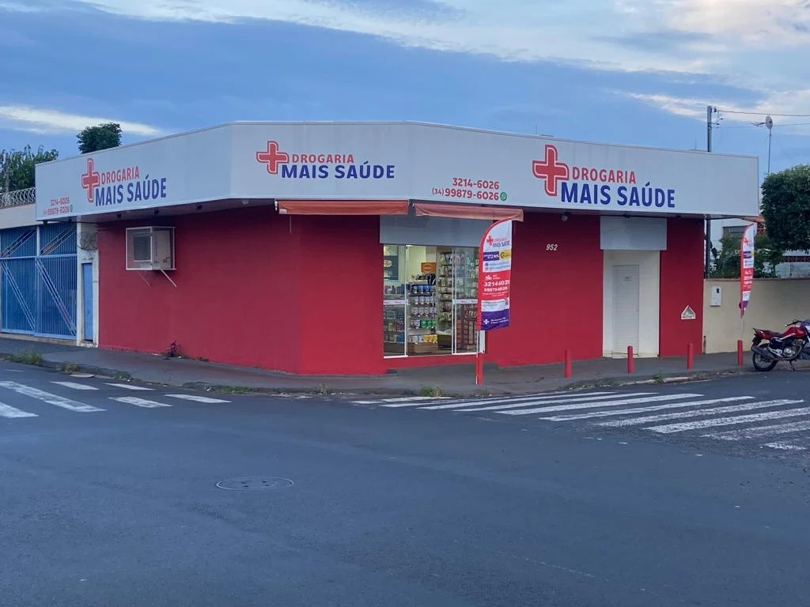
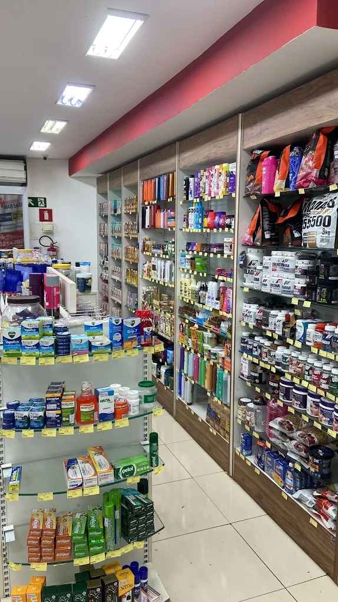

Dispensação de medicamentos
Orientação sobre uso correto, interações e armazenamento seguro.

Uberlândia - MG
Medicamentos, perfumaria, higiene pessoal e cuidado farmacêutico com atendimento próximo para o dia a dia.
Sobre nós
A Drogaria Mais Saúde atua em Uberlândia oferecendo produtos farmacêuticos, itens de conveniência, cosméticos, perfumaria e higiene pessoal. O atendimento combina variedade nas prateleiras com orientação responsável para que cada cliente use seus medicamentos de forma correta e segura.
Com cadastro ativo desde 2019, a loja atende na Rua Rafael Rinaldi, no bairro Martins, mantendo uma rotina voltada para proximidade, organização e apoio nas necessidades de saúde mais comuns da comunidade.

Principais serviços
Orientação sobre uso correto, interações e armazenamento seguro.
Medição de pressão arterial, temperatura corporal e glicemia capilar.
Administração de medicamentos prescritos, seguindo cuidados de segurança.
Ações para identificação precoce de diabetes, hipertensão e colesterol alterado.
Orientações e indicações farmacêuticas para problemas autolimitados.
Colocação de brincos com higiene, cuidado e procedimentos seguros.
Monitoramento do tratamento para apoiar eficácia e reduzir efeitos indesejados.
Comparação dos medicamentos em mudanças de atendimento para evitar duplicidades ou erros.
Orientações sobre hábitos saudáveis, prevenção e cuidado contínuo.
Avaliação de receitas e combinações de produtos para verificar possíveis interações.
Na loja
Produtos farmacêuticos para diferentes necessidades, com orientação de uso.
Opções para cuidado diário, beleza, higiene e bem-estar.
Itens essenciais para complementar compras rápidas e práticas.
Galeria
Contato e localização
Rua Rafael Rinaldi, 952 - Martins, Uberlândia - MG, CEP 38400-384.
Este site apresenta informações institucionais da Drogaria Mais Saúde e disponibiliza links de contato. Ao usar telefone, e-mail ou mapa, o visitante pode ser direcionado para serviços externos, sujeitos às políticas dessas plataformas.